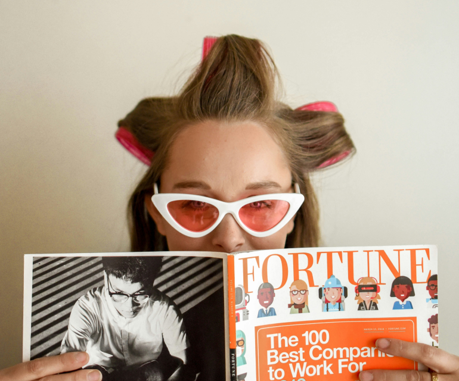

Окрашенные волосы требуют особого ухода, чтобы сохранить их
здоровье и яркость цвета. Правильно подобранные средства и щадящие
привычки помогут продлить стойкость оттенка, а также предотвратить
появление ломкости, сухости и тусклости. Ниже представлены
основные рекомендации, благодаря которым ваши локоны будут
выглядеть ухоженно и привлекательно даже спустя несколько недель
после окрашивания.
Используйте специальные шампуни и кондиционеры
Выбирайте средства, предназначенные именно для окрашенных волос.
Такие продукты содержат компоненты, которые помогают закрепить
пигмент внутри волоса, предотвращая быстрое вымывание цвета. Кроме
того, они создают защитный барьер от внешних факторов, сохраняя
насыщенность оттенка и естественный блеск.
Избегайте частого мытья головы
Частое мытьё существенно ускоряет потерю яркости цвета. Старайтесь
мыть голову не чаще 2–3 раз в неделю, используя при этом лишь
тёплую, а не горячую воду. Это поможет сохранить структуру волос,
их эластичность и влажность, а также избежать вымывания красящих
пигментов.
Применяйте термозащитные средства
Перед использованием фена, утюжка или плойки обязательно наносите
на волосы термозащитный спрей или крем. Такие средства
предотвращают повреждение волос под воздействием высоких
температур, сохраняя их структуру и помогая дольше удерживать
цвет.
Регулярно увлажняйте и питайте волосы
Окрашивание делает волосы более подверженными сухости, поэтому
важно уделить должное внимание их питанию и увлажнению.
Используйте маски и масла, содержащие натуральные компоненты
(аргановое, кокосовое, масло жожоба), которые восстанавливают
водный баланс, делают пряди более шелковистыми, а цвет — ярким и
сияющим.
Защищайте волосы от солнца
Ультрафиолетовые лучи могут вызывать выгорание цвета и ослаблять
структуру волос. При длительном пребывании на солнце надевайте
головной убор, используйте средства с UV-фильтрами или специальные
спреи, которые отражают вредное воздействие ультрафиолета.
Избегайте хлорированной воды
Хлор, содержащийся в воде бассейнов, негативно влияет на цвет и
состояние волос. Если планируете плавать, наденьте шапочку или
заранее обработайте пряди защитным средством. Так вы сведёте к
минимуму нежелательные изменения оттенка.
Регулярно подстригайте кончики
Секущиеся кончики не только портят внешний вид прически, но и
способствуют ломкости и тусклости волос. Регулярная стрижка концов
каждые 6–8 недель поможет поддерживать здоровую структуру прядей,
сохранив при этом цвет более выразительным.
Заключение
Соблюдая все вышеперечисленные рекомендации, вы сможете продлить
стойкость цвета и улучшить общее состояние окрашенных волос. Не
забывайте также о посещении профессионального мастера для
обновления окраски и подбора подходящих уходовых средств.
Регулярная забота о волосах — это ваш вклад в их красоту, здоровье
и привлекательный внешний вид на долгие месяцы.
 Назад
Назад